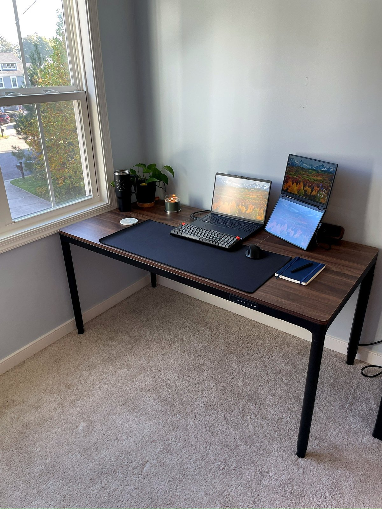
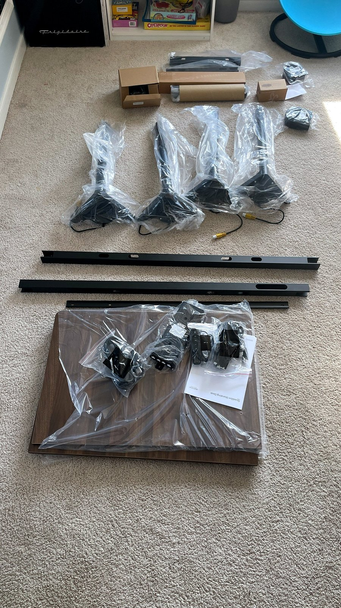
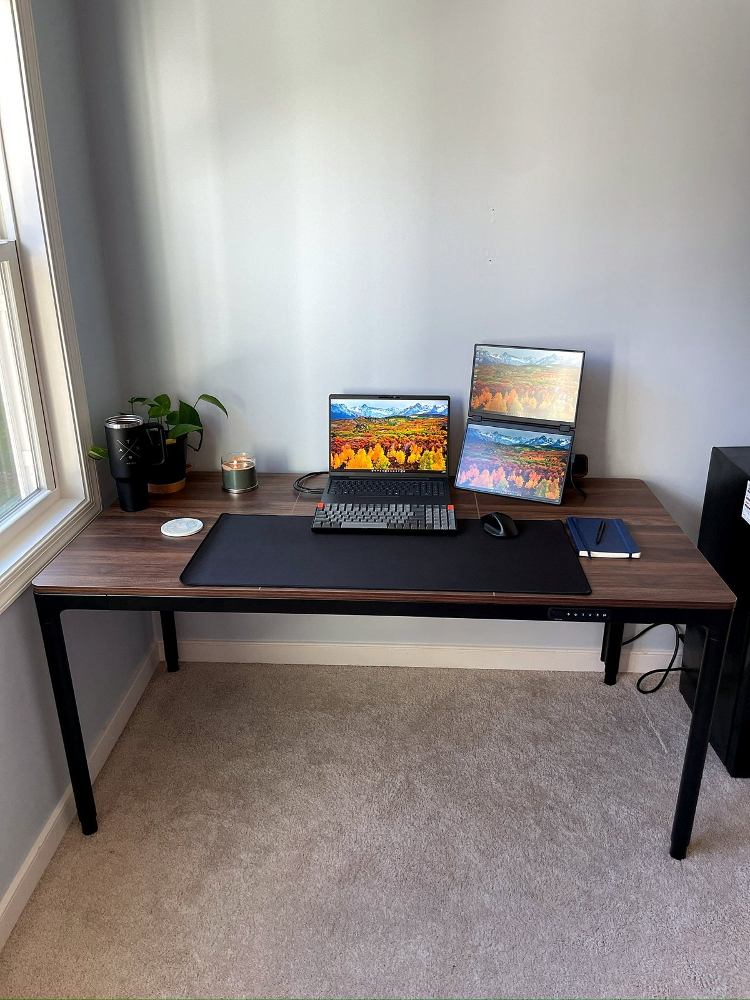
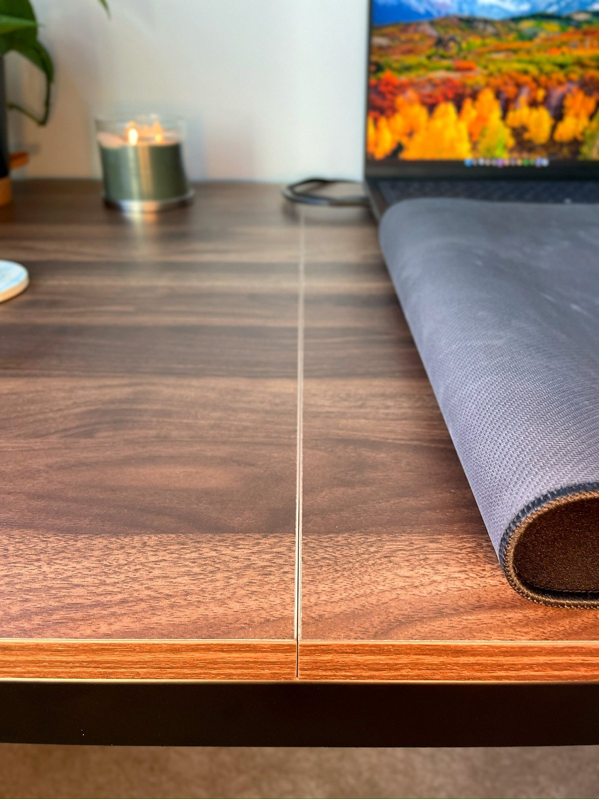
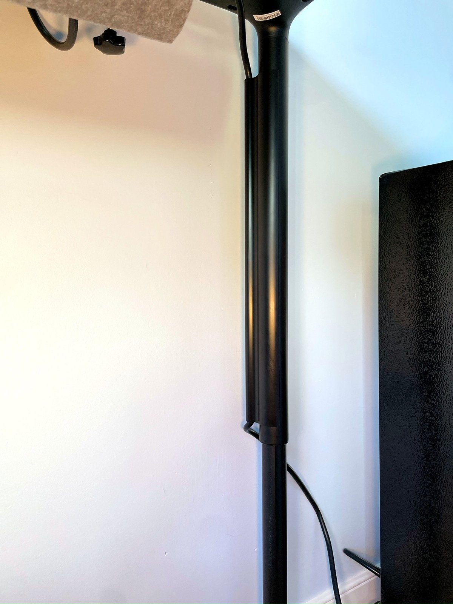
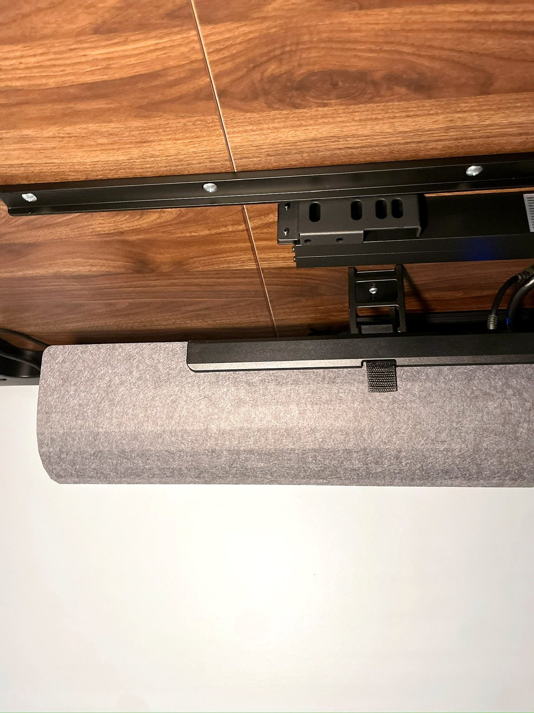
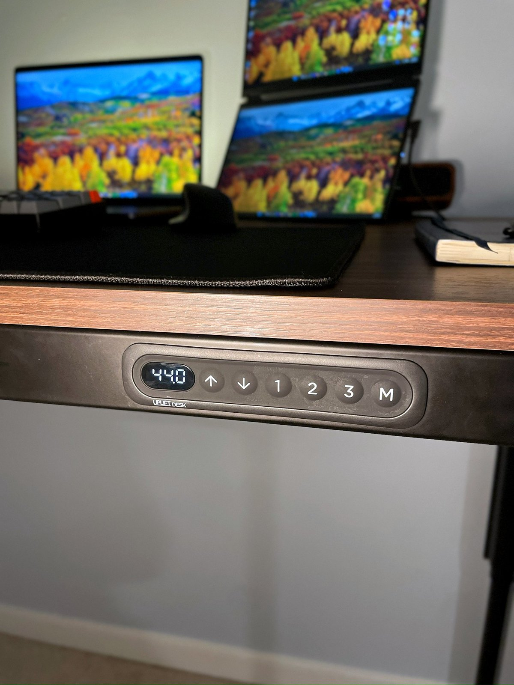
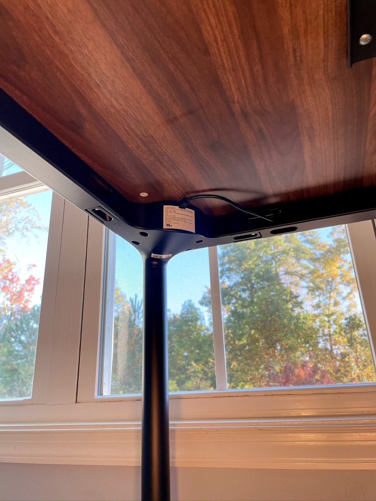
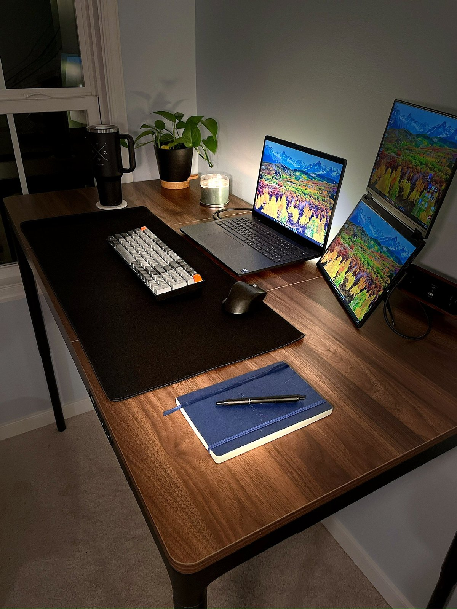

I’ve been using an UPLIFT V3 four-leg standing desk, so I already had a pretty good idea of what to expect when UPLIFT sent me the QuadZen. What I wasn’t expecting was just how different the two desks would feel in terms of design.
The QuadZen is lighter, more minimalist, and a lot less industrial looking than many standing desks I’ve seen. It looks like a normal four-legged table, which I mean as a compliment. Not everyone wants their desk to look like it belongs in a commercial office or a machine shop.
After putting it together and spending time using it, I can see why someone might choose the QuadZen over a more heavily equipped desk like my V3. There are some tradeoffs, particularly when it comes to stability at full height, but depending on how you use your desk, those tradeoffs might not matter much.

Assembly Was Surprisingly Easy
I thought assembly would be pretty straightforward because I’d already put together my V3. The QuadZen was even easier.
That’s not something I take for granted with furniture, especially a standing desk with multiple motors and moving parts. Getting everything together without turning the process into an afternoon project was a welcome surprise.

The QuadZen has a simpler overall design than the V3, and that comes through during assembly. You aren’t dealing with the same feeling of building out a more substantial workstation. It’s a more straightforward process, and I appreciated that.
It Looks Like a Table, Not a Piece of Office Equipment
This is probably my favorite thing about the QuadZen.
A lot of standing desks have a pretty industrial appearance. There’s nothing inherently wrong with that, and some people probably prefer it. But if your desk is in a bedroom, living room, or home office that doubles as another space, you might not want the furniture to look like it was pulled out of a corporate office.
The QuadZen looks much more like a traditional four-legged table. It’s clean, simple, and stylish without trying too hard.

That minimalist design also makes it a good fit for a setup that doesn’t need a ton of equipment. If you primarily work from a laptop and use a portable monitor when you need more screen space, the QuadZen makes a lot of sense. You get the benefits of an adjustable desk without making the desk itself the centerpiece of your entire setup.
Do You Need Everything the V3 Offers?
My V3 has a lot going on, and once you start adding accessories and customizing the setup, the cost climbs quickly. A fully spec’d-out UPLIFT V3 four-leg desk can cost over $2,000.
That’s a substantial investment, and not everyone needs that much desk.
The QuadZen that UPLIFT sent me takes a simpler approach. It gives you the height adjustment and a clean, functional workspace without requiring you to build out a more elaborate workstation. If you don’t need a pile of accessories or a setup designed around multiple pieces of equipment, I can see the appeal.
I wouldn’t automatically call it a replacement for the V3, because they serve slightly different needs. My V3 feels like a more substantial workstation, while the QuadZen is a more minimalist option that doesn’t take up as much visual space.
For someone who wants a standing desk that looks good in the room and gets the job done without a lot of extra fuss, the QuadZen is worth a look.
The Desktop Is Made of Three Sections, but You Wouldn’t Know It at First Glance
The QuadZen desktop is made from three sections of laminated wood. I’ll admit that I paid attention to how those sections came together because a desktop with multiple pieces can sometimes look like exactly what it is: several pieces joined together.
That hasn’t been my experience here. The sections line up exceptionally well, both across the surface and where the pieces meet. Once the desk is assembled, the desktop looks and feels cohesive rather than like three separate pieces of wood.

It’s a small detail, but it matters when the desk has such a simple design. There isn’t much else to distract your eye, so the fit and finish have to hold up.
Cable Management Is One of Those Details You Appreciate After Setup
I’m a fan of the way UPLIFT handles cable routing, particularly with the control cables for the four independent motors housed in the desk’s legs.
With a standing desk, you have to account for more than just the power cable running to the wall. You also have the connections that make the desk work, and keeping those organized makes a difference in how clean the finished setup looks.

The QuadZen also comes with a cable management tray. My V3 has one, too, and I’ve found it useful for keeping the underside of the desk from turning into a mess of wires.
You can spend time putting together a clean setup on top of the desk, but if you look underneath and see cables hanging everywhere, it takes away from the whole thing. The included tray helps keep that under control.

The Height Controller Doesn't Stick Out
Another detail I like is how UPLIFT incorporated the height controller into the frame.
The vertical section of the frame gives UPLIFT a place to mount the controller flush, so it doesn’t stick out awkwardly from the desk. It’s a small design choice, but it fits the overall look of the QuadZen.

The desk is simple by design, and the controller doesn’t interrupt that.
Stability Is Where I Notice the Biggest Difference
This is the part where I think it’s important to be honest about the differences between the QuadZen and my V3.
If I were rating the stability of my V3 at full height, I’d give it a 9 out of 10. The QuadZen would be around a 7 out of 10 by comparison.
That’s my subjective assessment, not a measured test, but I noticed the difference. The V3 feels more planted when it’s raised all the way up. The QuadZen is lighter and has a more minimalist design, and that comes with a tradeoff in how solid it feels at maximum height.
Whether that matters to you depends on what you’re doing at the desk.

My setup is primarily a laptop and portable monitor, so I don’t need the desk to support a huge collection of heavy equipment. In that kind of setup, I’m comfortable with the QuadZen’s stability.
If you’re planning to load your desk up with heavy equipment or you’re particularly sensitive to movement while typing, I’d give this more consideration before buying.
I wouldn’t pretend the two desks feel identical, because they don’t. The V3 is the more stable desk in my experience. The QuadZen still makes sense for a lighter, simpler workstation.
It's Quiet, Too
Noise is another area where the QuadZen holds its own.
The motors are just as quiet as the ones on my V3, if not a little quieter. I don’t have to think twice about raising or lowering the desk while I’m working, and the adjustment doesn’t become a distraction.
That might sound like a minor point, but if you’re changing positions throughout the day, it’s something you’ll notice. A desk that moves smoothly and quietly makes it easier to actually use the feature instead of leaving the desk at one height all day.
A Good Fit for a Laptop and Portable Monitor Setup
I’ve found the QuadZen particularly well suited to a more portable, minimalist workstation.
A laptop and portable monitor give me the flexibility to work across multiple windows without needing a huge desk covered in equipment. The QuadZen complements that setup instead of competing with it. There’s enough room to work comfortably, but the desk doesn’t feel oversized for what I’m doing.

You can certainly build a more elaborate setup on it. I just think the QuadZen’s design makes the most sense when you want a clean desk without a lot of extra hardware.
It also helps that the desk looks good when you’re not sitting at it. Since it resembles a regular table, it doesn’t dominate the room in the way some standing desks can.
Being Able to Change Positions Is the Point
One of the reasons I like standing desks is that I don’t feel tied to one position all day.
I can sit when I want to sit, stand when I want to stand, and change things up when I start getting uncomfortable. I’m not going to claim that standing all day is somehow better than sitting all day. The benefit for me is having the option to move around and adjust my workspace to what feels comfortable at the time.
The QuadZen gives me that flexibility without requiring a large, heavy-looking workstation. For someone who wants the option to switch between sitting and standing but doesn’t need a desk packed with accessories, that’s a pretty compelling combination.
Who Should Consider the UPLIFT QuadZen?
I think the QuadZen is a good fit for someone who wants a standing desk but doesn't necessarily want a standing desk aesthetic.
It makes sense for a minimalist home office, a laptop-based workstation, or anyone who wants a desk that looks more like furniture than office equipment. The straightforward assembly, quiet motors, included cable management tray, and unobtrusive controller all add to that appeal.
The biggest question is how much stability you need at full height. If your priority is a substantial workstation loaded with equipment, my V3 is the desk I’d lean toward. If your setup is lighter and you care about having something that looks good without taking over the room, the QuadZen deserves consideration.
My Take
Having used both the QuadZen and the V3 four-leg desk, I see the QuadZen as a simpler alternative rather than a direct replacement.
It was easier to assemble than I expected, the desktop sections fit together well, the cable management is useful, and the motors are impressively quiet. Most importantly, I like the way it looks. It has the functionality of a standing desk without looking like a piece of industrial office equipment.
The tradeoff is stability at full height. My V3 feels more solid, and I’d choose it for a heavier workstation. But for the laptop and portable monitor setup I’m using, the QuadZen does what I need it to do.
If you want a standing desk that looks like a normal table, keeps your workspace simple, and lets you change positions throughout the day, the QuadZen makes a strong case for itself.
The UPLIFT QuadZen trades some full-height stability for a desk that looks like real furniture. Assembly is easy, the three-piece top fits together cleanly, the motors are quiet, and the cable routing and flush keypad keep the whole thing tidy. For a laptop and portable monitor setup, it's a simple, good-looking way to get a sit-stand desk. For a heavy, fully loaded workstation, the V3 is still the pick.